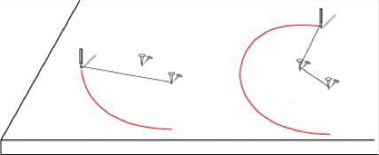
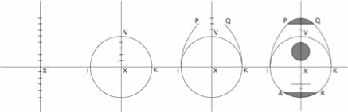
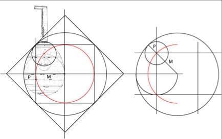

Le tracé à la ficelle résume l'idée général du tracé
au compas: "pour changer la direction d'une courbe il suffit
d'ajouter ou retrancher la mesure d'un rayon au rayon qui précède..."

À l'époque médiévale, le dessin d'une forme se confond avec ses mesures.
Il est généralement décrit à partir de la division d'une droite.
En réalité, ces mesures simples dissimulent une pensée mathématique
relativement élaborée fondée sur les sections proportionnelles.
(ci-dessous, le luth de Zwolle et les proportions de la quadrature du carré qui sont la clé de ses mesures)

L'interprétation de ces procédés de tracés et de mesures fait appel à des approximations des valeurs irrationnelles.
Ces techniques aujourd'hui disparues, introduisent la notion d'analogie (analogia) en tant que principe à l'origine de la diversité des mesures dites "proportionnelles".
L'animation ci-jointe viola Guarneridonne un aperçu de la mise en œuvre de ces procédures. Les rapports simples des différentes parties appartiennent aux séries des nombres qui deux à deux approchent les sections géométriques et harmoniques. Le Traité de Lutherie fournit les bases essentielles nécessaires à la compréhension de la forme des instrument.